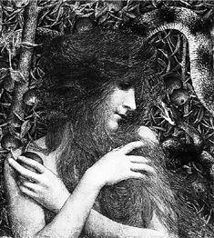

5
Managing Eve

IN SPITE of years of parochial schooling, I have come away with a view of the creation story that differs somewhat from what the nuns must have hoped. In my view, the great heroic figure of the story is Eve. She is everything that I respect in a person: irrepressibly curious, courageous, undaunted by authority. Most of all, she is intent upon personal growth, determined to fulfill not just some but all of her promise.
Remember the story of her “fall.” She was told that she might eat of everything in the garden except one thing: She could not eat of the Tree of Knowledge of Good and Evil. The fruit of this tree was not food at all, but understanding. If she ate it, she would know things that she was not intended to know, hence the proscription.
Eve’s response to this rule was, essentially, “No way, José.” She was not about to allow her growth as a person to be so limited. She ate the fruit and took the consequences. I hope that I would have been so brave in her place.